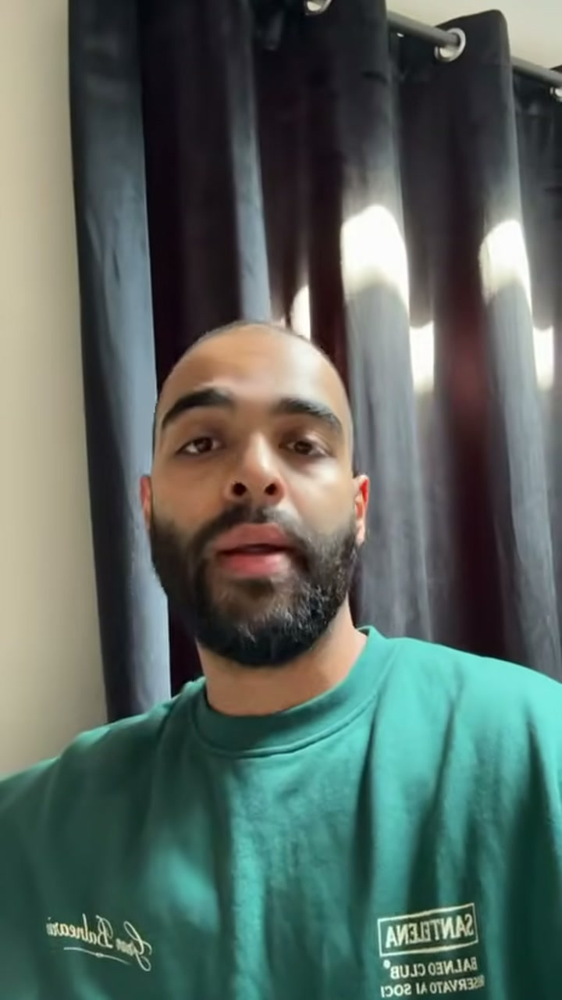

VERIFIED · 0:23

It helped me get rid of two appointment setters
“He's literally helped me in my business get rid of two appointment setters with the IG Outreach Pro. Honestly, I couldn't thank him enough — and I can't believe the system worked. I highly, highly recommend anybody who's a coach who's got an appointment setter to try the system out. You'll see for yourself: it is so worth the price.”
Coaching business ownerVideo 01 · 23 seconds
Watch on YouTube